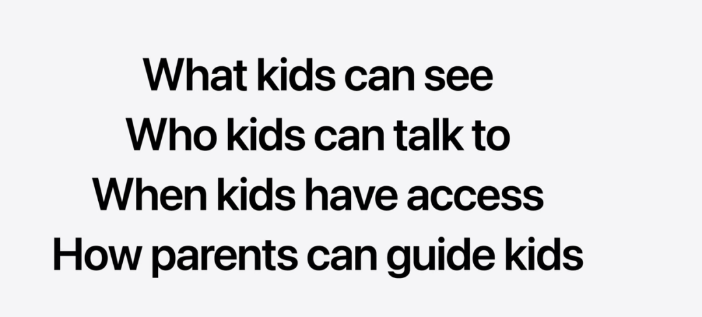
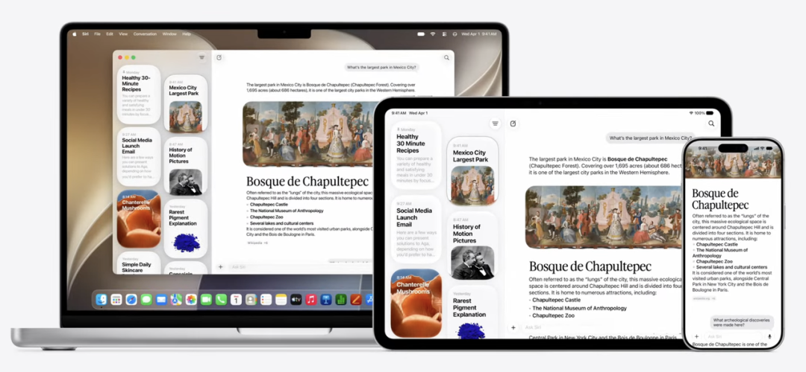
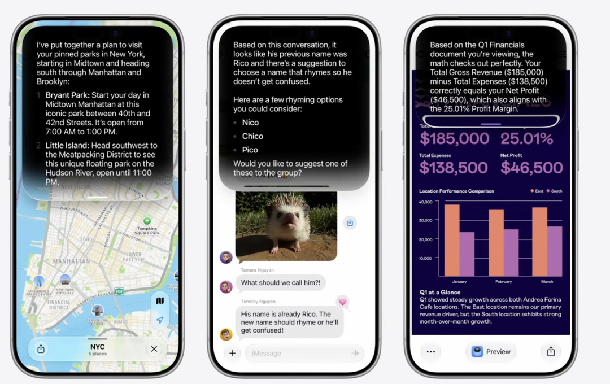
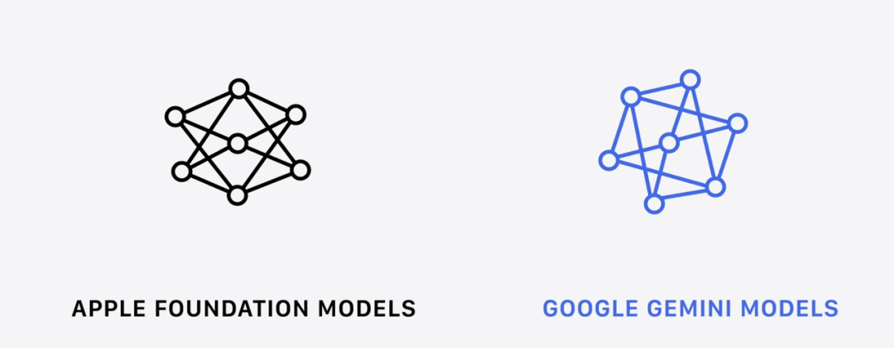
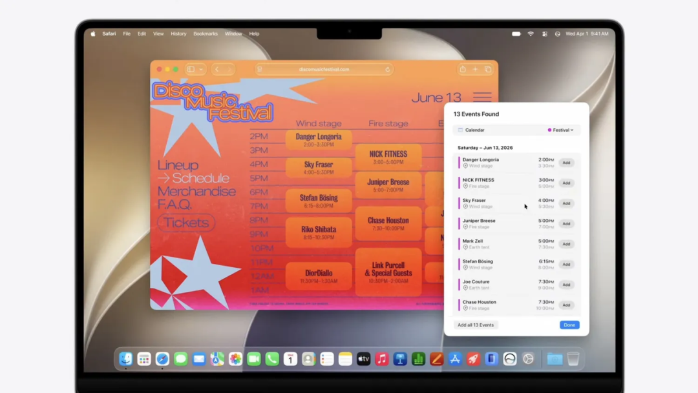
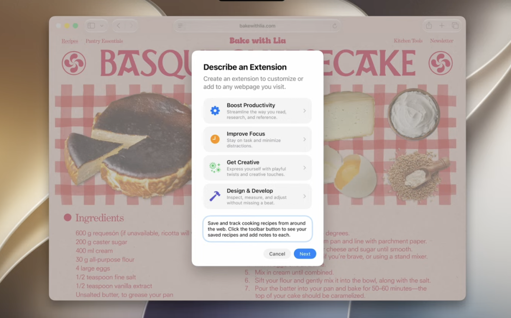
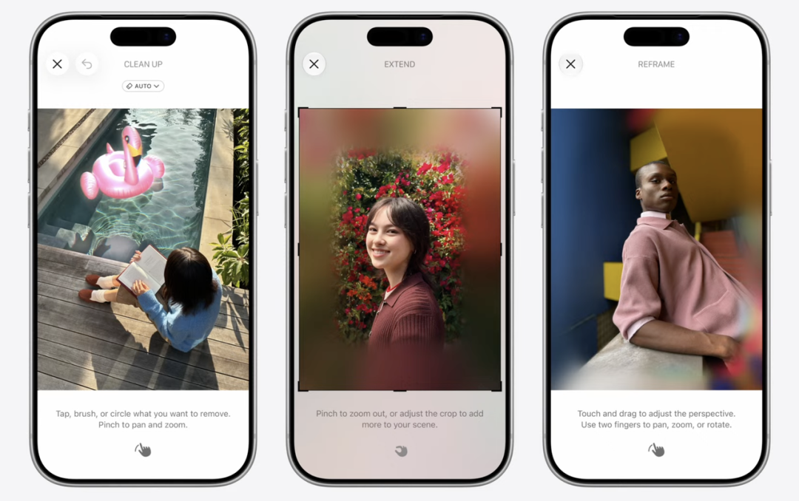
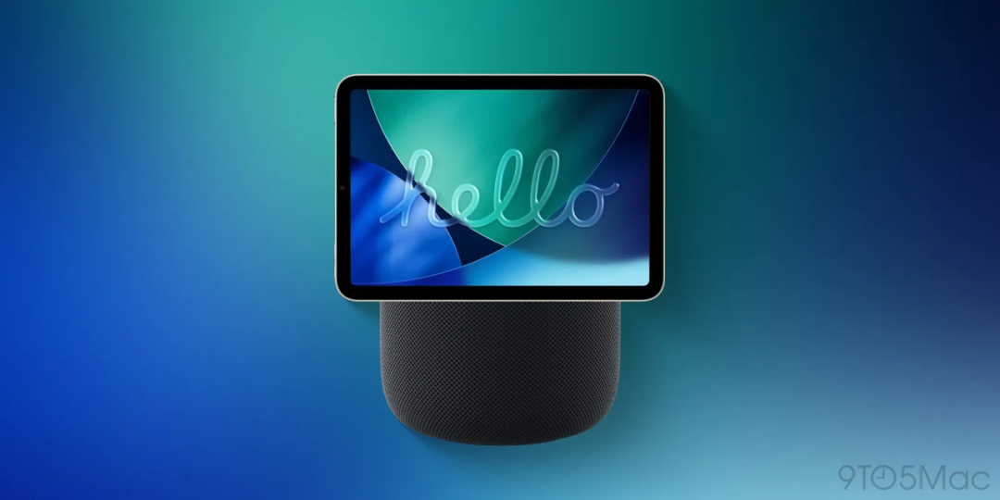
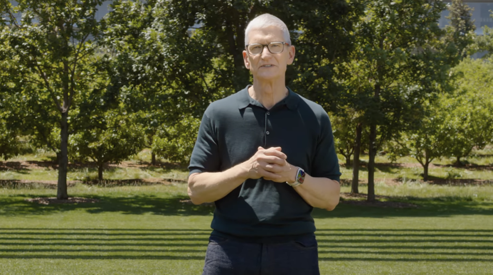
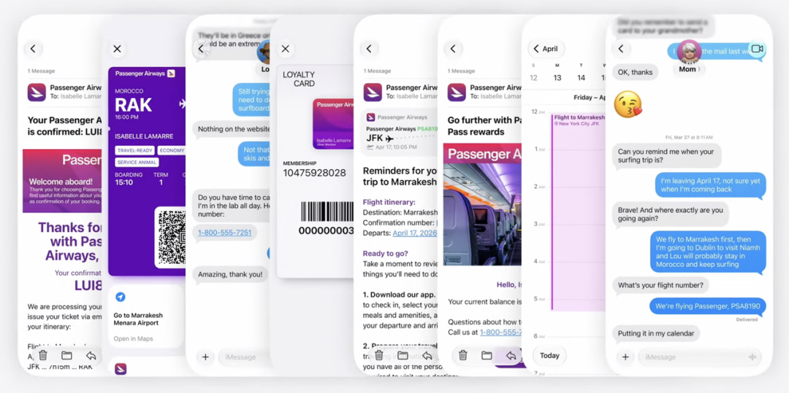

📈 库克谢幕送上了苹果 AI 史上最大更新，可惜咱都用不上！
Cook's farewell: Apple's biggest AI update ever, but not for China
周二凌晨dawn[dɔːn] n. 凌晨一点看 WWDC26？打工人熬endure[ɪnˈdjʊə] v. 忍受不起。
但欣赏appreciate[əˈpriːʃieɪt] v. 欣赏库克作为苹果 CEO 的最后一场谢幕演出？那我捶死闹钟alarm[əˈlɑːm] n. 闹钟惊坐起。
WWDC26 只有三个关键词keyword[ˈkiːwɜːd] n. 关键词：Siri AI、开放、告别。
Siri AI 终于来了，还买一送三——苹果第一次把 Gemini、Claude 和 ChatGPT 请进了自己的系统system[ˈsɪstəm] n. 系统。
这场发布会看似在讲 AI，实际上讲的是苹果如何面对、接受、改变一个事实：AI 时代era[ˈɪərə] n. 时代已经开始，苹果启动的太晚了，这时，苹果该怎么办。
软件主管 Craig Federighi 用一句嘲讽sarcasm[ˈsɑːkæzəm] n. 嘲讽秀出了苹果的态度，“有些人好像只顾埋头狂奔，为了 AI 而 AI，却忘了它本该服务的是谁——是我们，所有人。”
iOS 27：辞旧farewell[feəˈwel] n. 辞旧迎 Siri
先说大家最关心concern[kənˈsɜːn] n. 关心的 iOS。
别急着找 AI，我们先看一眼你每天要滑几百次的系统界面interface[ˈɪntəfeɪs] n. 界面。iOS 27 这一波更新，视觉visual[ˈvɪʒuəl] adj. 视觉的上主打一个“打脸式退烧”。
去年 iOS 26 硬推的那套“Liquid Glass（液态玻璃）”设计，发布会上，看起来流光溢彩，高级感premium[ˈpriːmiəm] adj. 高级的拉满。结果大家当了一整年免费测试员，连带骂了它一整年“美丽废物”——动不动就掉帧lag[læɡ] v. 卡顿、半透明背景卡出重影，耗电量还跟着起飞。
所以今年苹果老实了，把这套花里胡哨的特效砍了一大半，让视觉上变得克制，甚至直接在设置里加了一个“透明度opacity[əʊˈpæsəti] n. 透明度滑块”，允许你把半透明背景调成纯色，先把字显示清楚。
也有分析认为，这种更加克制的界面设计，可能是在为未来更复杂的折叠屏foldable[ˈfəʊldəbəl] adj. 可折叠的形态做准备，毕竟折叠屏自带液态玻璃感，再液态该融化了。
打破苹果“计划性淘汰obsolescence[ˌɒbsəˈlesəns] n. 淘汰”祖传刀法的是，今年的 iOS 27 破例没有抛弃任何一款老机型，连老掉牙的 iPhone 11 都能照样升级。
不仅如此，苹果靠着底层的预加载prefetch[priːˈfetʃ] v. 预加载机制，让 App 启动速度直接提升了 30%，照片加载快了 70%，AirDrop 传输更是提速了 80%。
但要强行撑起一个跨代版本号version[ˈvɜːʃən] n. 版本，总得靠几个“微创新”来凑数。但今年这几个小功能feature[ˈfiːtʃə] n. 功能，真有点儿东西。
比如“搜索search[sɜːtʃ] n. 搜索”功能。之前我明明知道某个文件file[faɪl] n. 文件、某张照片在手机里，却怎么都搜不到。这次苹果重构了 Spotlight、照片和邮件的底层搜索索引index[ˈɪndeks] n. 索引，系统会为你所有的内容建一个档案，连刚收的邮件也能马上被收录。
苹果打通了所有系统 App 之间的“文件互通interop[ˌɪntərˈɒp] n. 互通”，让搜索更方便｜Apple
还有我们深恶痛绝abhor[əbˈhɔː] v. 憎恨的“硬连 WiFi”。之前从店里走出来，手机老是死命连着微弱faint[feɪnt] adj. 微弱的的 Wi-Fi 假装有网。现在系统会自动、无感地帮你切到蜂窝网络cellular[ˈseljʊlə] adj. 蜂窝的。
在把系统打磨得更顺手的同时，苹果这次还花了不少精力来讲一个很有分量的话题：如何用数码digital[ˈdɪdʒɪtəl] adj. 数码的产品保护小孩。这是整场 WWDC 里最不“硅谷silicon[ˈsɪlɪkən] n. 硅谷”的时刻。
他们联合alliance[əˈlaɪəns] n. 联合美国儿科学会，给家长递了一套很实在的控制工具。比如“Ask to Browse”功能，小孩如果在 Safari 里想打开一个新网站，家长的设备会立刻收到弹窗申请，你审核approve[əˈpruːv] v. 审核点头了他们才能看。但好笑的是，这个拦截block[blɒk] v. 拦截功能只在 Safari 里管用，要是孩子下了 Chrome 浏览器，苹果这道防线就直接抓瞎了。

在通信安全方面，不仅能自动模糊掉涉黄的照片，连带有血腥暴力violence[ˈvaɪələns] n. 暴力的内容也会被提前拦截。
除此之外，系统还根据专家的临床clinical[ˈklɪnɪkəl] adj. 临床的建议，直接给了儿童包含娱乐、游戏和社交媒体的“每日屏幕时间建议”。
“微创新”里最大的功能，是给相机camera[ˈkæmərə] n. 相机增加的 Siri Mode。具体concrete[ˈkɒŋkriːt] adj. 具体的怎么用？
你拿镜头拍一下午饭，Siri 就能识别recognize[ˈrekəɡnaɪz] v. 识别食物热量和营养数据；扫一张名片或者海报上的地址address[əˈdres] n. 地址，信息直接塞进通讯录、日记；和朋友聚餐，拿相机拍下小票，系统底层的 AI 就能算出每个人该 A 多少钱，还能直接走 Apple Cash 发出收款collect[kəˈlekt] v. 收款请求。
这其实是将大家频繁使用 Chatbot 的用途更加场景化contextual[kənˈtekstʃuəl] adj. 情境化的的融入系统功能中。
以及，还把之前需要下载不同 App 分别解决的问题，挪到了苹果原生 App，让它们全部串联起来，一个动作，打通一条“相机 - Siri - 日历/通讯录/健康”路径pipeline[ˈpaɪplaɪn] n. 路径（走自己的路，让别人无路可走）。
这里，就引出elicit[ɪˈlɪsɪt] v. 引出了 iOS 27 的重点：那个让 all system 闪闪发光的新 Siri。
Siri AI 这次真真真要来了arrive[əˈraɪv] v. 到来，
Siri 要“脱胎换骨transform[trænsˈfɔːm] v. 脱胎换骨、接入大模型”这句话堪比科技圈的“狼来了”。苹果从前年喊到去年，每年 WWDC 都强行当主角spotlight[ˈspɒtlaɪt] n. 焦点，大家耳朵都听起茧了。
今年，库克在退休retire[rɪˈtaɪə] v. 退休前，终于把这盘冷饭端出来了，还炒出了点真东西。
去年的 Apple Intelligence 更像给系统加了几个 AI 功能capability[ˌkeɪpəˈbɪləti] n. 能力。今年的 Siri AI， 成了独立standalone[ˈstændələʊn] adj. 独立的 App，还开始替你操作设备。
新版 Siri 最直观intuitive[ɪnˈtjuːɪtɪv] adj. 直观的的变化始于视觉。唤醒它的时候，灵动岛会亮起一圈挺好看的炫彩动画animation[ˌænɪˈmeɪʃən] n. 动画。如果你正坐在工位上不方便说话，屏幕中间往下一拉，就是一个半透明translucent[trænzˈluːsənt] adj. 半透明的的“Search or Ask”打字框。界面全改成了深色背景background[ˈbækɡraʊnd] n. 背景配高光，连浅色模式都没留。
功能上，它终于像个现代modern[ˈmɒdən] adj. 现代的的 AI 了。它现在有一个类似 ChatGPT 的独立 App 形态，你可以往里面传图片、丢 PDF，甚至能像微信一样保留你的历史对话conversation[ˌkɒnvəˈseɪʃən] n. 对话卡片，方便随时接续昨天没聊完的话题。

跨 OS 的 Siri 已经成了一个独立autonomous[ɔːˈtɒnəməs] adj. 独立的的 App｜Apple
写作辅助也全面升级，你只要用自然语言描述需求，它能根据你跟特定对象的沟通习惯，模仿mimic[ˈmɪmɪk] v. 模仿你的语气来生成草稿，还能全自动校对错别字。
更核心的杀招，当然是它有系统级的最高权限permission[pəˈmɪʃən] n. 权限，能读懂屏幕，和”广泛的世界知识（Broad World Knowledge）”能力。
举个例子，你现在可以丢给它一句很模糊的指令：“找一下上周五财务发我的那个预算budget[ˈbʌdʒɪt] n. 预算表格”，它会自己钻进你的邮件、短信和备忘录里把东西拎出来。
或者你正在看一篇冗长的英文报告，直接叫它“把屏幕上这几段，提炼extract[ɪkˈstrækt] v. 提炼成中文概要，发给糕总”，它能直接“看见”并理解你当前屏幕上显示的内容，然后直接执行。

这颗能干的脑袋，底座其实是苹果“第二代基础模型”与谷歌 Gemini 深度整合integrate[ˈɪntɪɡreɪt] v. 整合的产物。
为了让 Siri 迅速变聪明，苹果不仅大方承认了跟谷歌的模型合作，并高调推出了“私有云计算（Private Cloud Compute）”技术，标榜处理请求时不留存任何数据，并且放话“随时接受外部专家的安全审计audit[ˈɔːdɪt] n. 审计”，试图在大模型时代，保住隐私这块金字招牌。
同时，苹果还在系统设置里专门加了一个“扩展extension[ɪkˈstenʃən] n. 扩展”分区。你还可以直接把 Claude 或者 ChatGPT 设为系统的默认default[dɪˈfɔːlt] adj. 默认的写作和图像生成引擎。
为了不让你弄混，第三方 AI 生成的内容，系统还会用另一种声音来念，跟 Siri 默认声音做区分differentiate[ˌdɪfəˈrenʃieɪt] v. 区分。
这就很有意思significance[sɪɡˈnɪfɪkəns] n. 意义了。一向把生态ecosystem[ˈiːkəʊsɪstəm] n. 生态大门关得最紧的苹果，为什么突然主动把钥匙交给了其他三大大模型厂商？
Siri 已经具备possess[pəˈzes] v. 具备了长对话、保留历史对话的能力｜Apple
这并不是苹果突然大度，可能是回过味儿，算清账account[əˈkaʊnt] n. 账目了。
现在的生成式 AI 赛道，是在靠海量资本capital[ˈkæpɪtəl] n. 资本来维持运转的无底洞，连头部玩家都在头疼怎么赚钱，反而是在淘金时代下，造铲子的英伟达、SK 海力士，卖数据的 Reddit 赚得盆满钵满。
而且所有人都知道，苹果现在入局entry[ˈentri] n. 进入太晚了。更晚的是，它的 AI 还没铺开deploy[dɪˈplɔɪ] v. 部署。
所以，苹果这招以退为进，把天价的算力compute[kəmˈpjuːt] n. 算力成本丢给模型厂商们。它只需要握紧手里十几亿台 iPhone，利用不可替代的硬件壁垒barrier[ˈbæriə] n. 壁垒，服务好用户体验，把用户绑在苹果生态上。
就像科技评论家critic[ˈkrɪtɪk] n. 评论家 John Gruber 所说“在 AI 时代，到目前为止，苹果产品的需求不降反升。而且市场上还没有任何一款产品能威胁threaten[ˈθretən] v. 威胁到 iPhone、iPad、Mac、Apple Watch 或 AirPods。”

而第三方大模型虽然能在苹果的系统里拿到海量的调用请求，但它们永远碰不到用户最深层intimate[ˈɪntɪmət] adj. 深层的的个人数据，等于是给苹果生态打工的“算力矿工”。
所以我们能看到，OpenAI 在下场造手机，透露出的是“没有硬件入口，大模型终将受制于人”的焦虑anxiety[æŋˈzaɪəti] n. 焦虑。
这种转向，甚至可以从过去 50 年，苹果选择掌门人steward[ˈstjuːəd] n. 管理者的思路中看到。
乔布斯强调“硬件是软件的载体vehicle[ˈviːɪkəl] n. 载体”，他造 iPhone 的原因是 iOS。
到库克时代的“供应链与账本管理学”，软硬件并行，形成了牢靠的苹果生态和商业帝国empire[ˈempaɪə] n. 帝国。
再到即将上任的新 CEO 特纳斯，凭借他长期负责硬件工程的背景，或许将把苹果带入“硬件即绝对分发渠道channel[ˈtʃænəl] n. 渠道”的时代。
介绍了这么多，忘了说最重要essential[ɪˈsenʃəl] adj. 重要的的。
Siri AI 和新 Apple Intelligence 因为监管regulation[ˌreɡjʊˈleɪʃən] n. 监管要求，国区依旧不提供，上线时间未知。
macOS 等“边角料scrap[skræp] n. 废料”
说完了占据绝对 C 位的 iOS 27 和 Siri AI，剩下的几个硬件hardware[ˈhɑːdweə] n. 硬件系统更新就显得有点边缘化了。
看整场发布会的基调overtone[ˈəʊvətəʊn] n. 基调就能感觉得出来，只要不带 AI，或者不姓 Siri，都不好意思在台上多要两分钟的演讲时间。所以，像 macOS、iPadOS、watchOS 和 visionOS 这些本该是重头戏highlight[ˈhaɪlaɪt] n. 亮点的系统，这次基本都被草草打包带过。
不过，就算戏份被挤压squeeze[skwiːz] v. 挤压，这几个系统里还是藏着一些能改变你使用习惯的动作。篇幅length[leŋθ] n. 篇幅不大，就把它们揉到一块儿，挑有意思的说。
先说 Mac，今年的 macOS 27 有个挺浪漫的代号codename[ˈkəʊdneɪm] n. 代号，叫“Golden Gate”（金门桥）。但这版系统干起事来可一点都不温柔gentle[ˈdʒentl] adj. 温柔的。

这一版办了两件大事undertaking[ˌʌndəˈteɪkɪŋ] n. 事业，全是在跟过去说再见。
第一件是“大清洗”，新系统直接拔掉了对 Intel 芯片chip[tʃɪp] n. 芯片的支持，这意味着，如果你手里还抱着 2020 年之前的老款 Intel Mac，今年算是被正式锁死在旧时代了。
第二件事就有意思了，在界面上，macOS 27 统一了顶部的工具栏toolbar[ˈtuːlbɑː] n. 工具栏，侧边栏直接延伸到窗口边缘，圆角也变得更小更紧凑。明面上说是为了视觉清爽，但开发者们翻开系统的底层框架framework[ˈfreɪmwɜːk] n. 框架，发现苹果在偷偷给触控屏 MacBook 做系统级的准备工作，界面设计就是其中之一。
老果粉肯定记得，乔布斯当年在台上言之凿凿地说“电脑屏幕用触控在人体工学ergonomics[ˌɜːɡəˈnɒmɪks] n. 人体工学上就是个灾难”。但现在 Windows 阵营camp[kæmp] n. 阵营的“二合一”电脑满街跑，iPad 又尴尬地卡在中间。苹果最后也得向市场低头concede[kənˈsiːd] v. 妥协，干脆全融了。
交互interaction[ˌɪntərˈækʃən] n. 交互层面上，Mac 上的 Siri AI 换了个住处，现在融进了 Spotlight 搜索框里。你敲完问题，搜索结果能展开expand[ɪkˈspænd] v. 展开成一个可以连续打字聊天的对话界面。
有看头的还有 Safari 浏览器browser[ˈbraʊzə] n. 浏览器。AI 开始接管你的标签页，只要你开了一堆网页，它会自己分析内容并按主题归类categorize[ˈkætəɡəraɪz] v. 归类（比如把你研究咖啡豆的网页全塞进一个叫“Coffee”的分组里）。
它甚至还加了个“Describe an Extension”的功能，你想给浏览器加什么插件，用大白话描述describe[dɪˈskraɪb] v. 描述一遍，AI 就能直接给你编出个自定义插件出来，比 Vibe-Coding 还快。

另外，密码password[ˈpɑːswɜːd] n. 密码 App 升级成了“智能代理”。如果发现你的某个网站密码泄露leak[liːk] v. 泄露了，它能在后台自动替你跑到特定网站去把不安全的密码给改了。
至于平板tablet[ˈtæblɪt] n. 平板和手表（还有快被人忘了的 Vision Pro），今年就没那么多炸裂的戏份了，主线基本上是把 AI 拆散了，洒进自带的软件里。
在手表上，watchOS 27 也跟着出了一个独立的 Siri App，不需要你傻傻地对着空气喊指令command[kəˈmɑːnd] n. 指令，能直接进去看历史对话结果。
而 Vision Pro 上的 visionOS 27 也沾了光benefit[ˈbenɪfɪt] v. 受益。它干掉了“Hey Siri”的唤醒词，Siri 可以识别你的视线gaze[ɡeɪz] n. 视线，眼盯着哪里直接开问。
甚至连一直没动静的智能家居smarthome[ˈsmɑːthəʊm] n. 智能家居 Home App 也被 AI 带动了。如果你的门口装了兼容的监控surveillance[sɜːˈveɪləns] n. 监控摄像头，Apple Intelligence 能自动分析录像，用文字给你总结一句话简报（比如“你家后院刚才发生了什么”或者“快递送到了”），省得你一条条去翻视频。
最实用的 AI 补丁还打在了“照片”应用里，修图工具加了三张王牌trump[trʌmp] n. 王牌：
· Clean Up，能更干净地擦掉背景里杂乱clutter[ˈklʌtə] n. 杂乱的人或物。
· Extend，手指往外拉一下照片边缘edge[edʒ] n. 边缘，AI 自动根据画面逻辑帮你补全导出的像素。
· 针对空间照片的 Spatial Reframe，能在后期轻微改变照片的透视perspective[pəˈspektɪv] n. 透视角度，并用生成式 AI 补齐边缘空隙。

更“活久见”的是，iCloud 的共享share[ʃeə] v. 共享相册首次向 Android 和 Windows 用户敞开了大门，以后跟用安卓手机的朋友出去玩，终于能无缝拼图了。
AirPods 的设置页面也精简streamline[ˈstriːmlaɪn] v. 精简了，还加入了自定义 EQ 调节。
在“快捷指令”里，也不再用你费劲地编自动化automate[ˈɔːtəmeɪt] v. 自动化指令，你用自然语言直接对它说想要什么，AI 就能自动帮你把多步骤的指令编好。
这些遍布各个 OS 的 AI 化，传达了苹果对 AI 的一个理念philosophy[fɪˈlɒsəfi] n. 理念。
苹果不打算把 AI 作为硬件卖点appeal[əˈpiːl] n. 卖点，而是把它打造成你在用设备时，顺手就能用到的底层工具。
而苹果开放的对象，不只是 Gemini、Claude 和 ChatGPT，它还在把自己的 Foundation Models 和 Core AI 框架开放给开发者developer[dɪˈveləpə] n. 开发者。
某种程度上，这场 WWDC 的主题theme[θiːm] n. 主题不只是 AI，还有“开放”。
结束了满场乱飞的系统更新，按照往年 WWDC 的习惯，最后得来点新硬件压轴finale[fɪˈnɑːli] n. 终场吧？但今年什么都没有void[vɔɪd] n. 空无。
比如业内传了很久、带一块 7 英寸方形屏幕的智能家居中枢 HomePad，这次成了“只发不卖”的期货futures[ˈfjuːtʃəz] n. 期货。
因为苹果被自己硬上的这波 AI 浪潮wave[weɪv] n. 浪潮，卡住了硬件的脖子。硬件生产线早就搞定了，但 Siri 软件没写完，硬件就只能在库房warehouse[ˈweəhaʊs] n. 仓库里憋着吃灰。

根据爆料称，HomePad 推迟到秋季autumn[ˈɔːtəm] n. 秋季发布｜9To5Mac
Mac 生产线更憋屈，本该上 M5 芯片的 Mac Studio 和 Mac mini，发售launch[lɔːntʃ] v. 发售时间硬生生被推到了秋天。
还是因为 AI，全球的 AI 服务器需求把内存产能给吸干了，苹果面临严重的供应链短缺shortage[ˈʃɔːtɪdʒ] n. 短缺，甚至直接砍掉了新机器的高配内存选项。
这里就暴露了苹果现在的危机crisis[ˈkraɪsɪs] n. 危机。
以前大家买 Mac 跑本地 AI，图的并不是苹果的芯片算力有多逆天，而是看中它容量大、性价比value[ˈvæljuː] n. 价值高的“统一内存”。
但现在，英伟达已经开始掏出带 CUDA 的统一内存架构architecture[ˈɑːkɪtektʃə] n. 架构来砸场子了。而在宏观macro[ˈmækrəʊ] adj. 宏观的供应链上，内存产能又被微软、英伟达这些大厂抢单。
面对 AI 浪潮，苹果一直引以为傲的“软硬一体、一切尽在掌握”的闭墙神话myth[mɪθ] n. 神话，在软硬件两个方面，头一次显得有点被动。
所以，与其说是苹果选择开放，不如说它是被动passive[ˈpæsɪv] adj. 被动的开放。
但它还是那个苹果，会在紧凑的 WWDC 上，花十分钟介绍他们如何在数码产品使用上保护孩子，会在大模型时代，继续坚持数据隐私privacy[ˈprɪvəsi] n. 隐私保护，会在健康 APP 上加入对女性“围绝经期”的记录功能。

在演讲的最后，库克站在彩虹拱门前，有些动容emotion[ɪˈməʊʃən] n. 情感地说道：“就我个人而言，作为 CEO 的这些年，最大的亮点就是像今天这样的时刻。过去这些年，是你们在帮助人们用非凡extraordinary[ɪkˈstrɔːdənəri] adj. 非凡的的新方式去连接、创造、学习和体验这个世界。”
“能与充满创造力、关怀和信念的团队一起推进这一使命mission[ˈmɪʃən] n. 使命，继续在人们的生活中产生持久的影响，是我一生的荣耀。”随着这句告别，库克时代正式画上了句号period[ˈpɪəriəd] n. 句号。
他留给下一任 CEO 特纳斯的，不再是当年那个数据绝对闭环、硬件给软件服务的乔氏理想，而是一个向谷歌借脑、向市场低头、在供应链上还要跟人抢内存的混合型hybrid[ˈhaɪbrɪd] adj. 混合的帝国。
一个时代结束conclude[kənˈkluːd] v. 结束了。但作为普通用户，其实不用太在意巨型公司的王权更迭succession[səkˈseʃən] n. 更迭。
过去二十年，从 iPod 到 iPhone，从多点触控到 Face ID，苹果最擅长的从来不是发明invent[ɪnˈvent] v. 发明一项技术，而是把技术藏起来。
当整个行业都在争论模型参数parameter[pəˈræmɪtə] n. 参数、推理成本和算力战争时，苹果选择把 AI 塞进相机、照片、邮件、日历和搜索框里。

苹果的 AI 打法是：把 AI 缝进了自己所有的原生native[ˈneɪtɪv] adj. 原生的应用里，从系统级打通。｜Apple
它不想让你天天捧着 AI 聊天，它想让你在需要的时候，忘记自己正在使用usage[ˈjuːsɪdʒ] n. 使用 AI。
这未必是最激进radical[ˈrædɪkəl] adj. 激进的的未来。在一个所有公司都在追逐pursue[pəˈsjuː] v. 追逐更强 AI 的时代，苹果依然试图回答另一个问题：
技术technology[tekˈnɒlədʒi] n. 技术究竟应该离人更近，还是离人更远。至少在 WWDC26 上，它给出的答案answer[ˈɑːnsə] n. 答案仍然是前者。
本文来自果壳，未经授权authorize[ˈɔːθəraɪz] v. 授权不得转载.
如有需要请联系contact[ˈkɒntækt] v. 联系sns@guokr.com